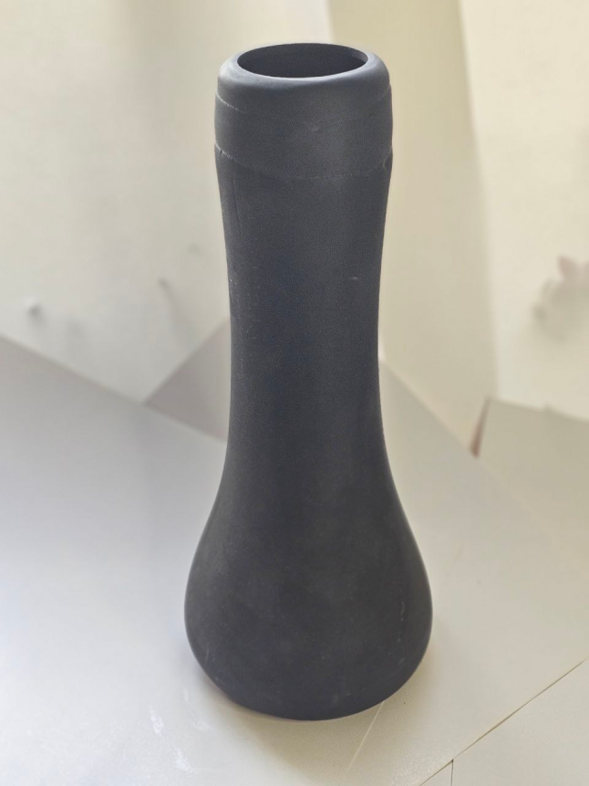
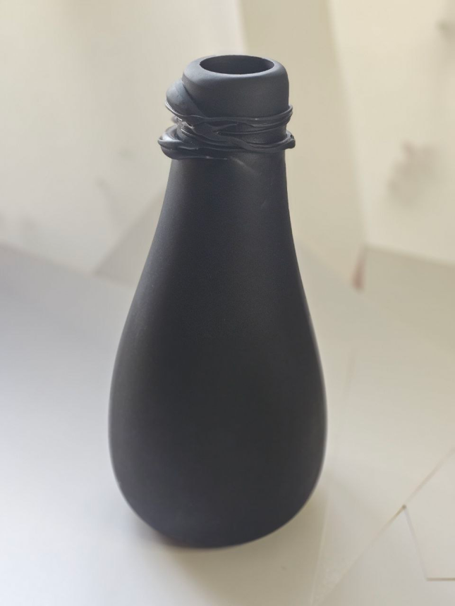
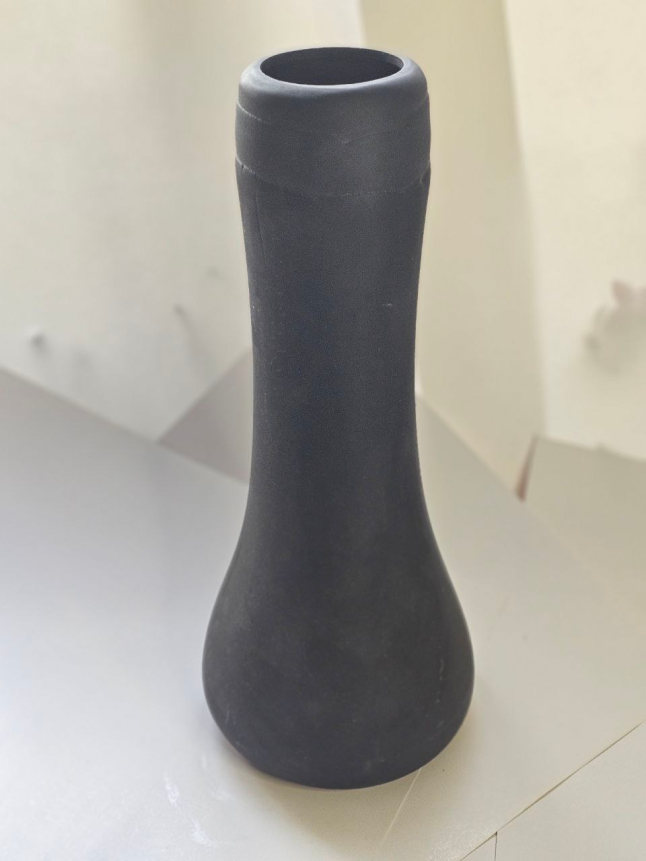
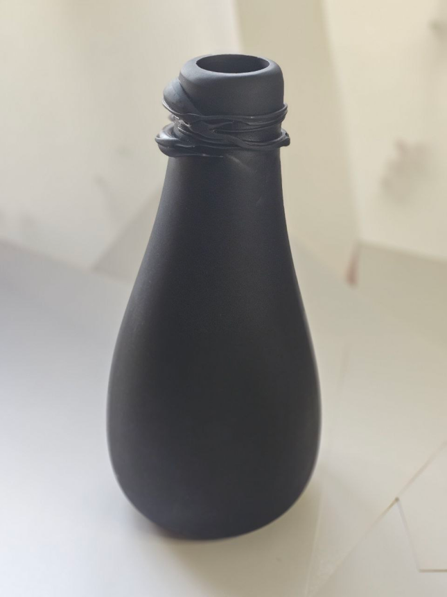
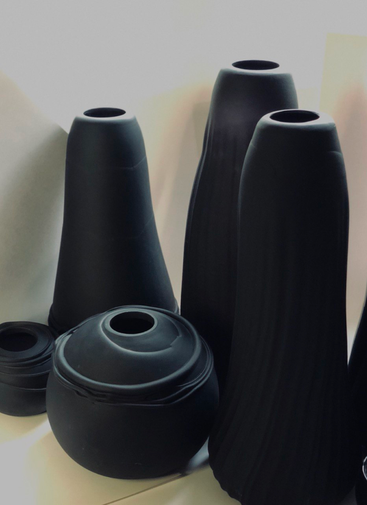
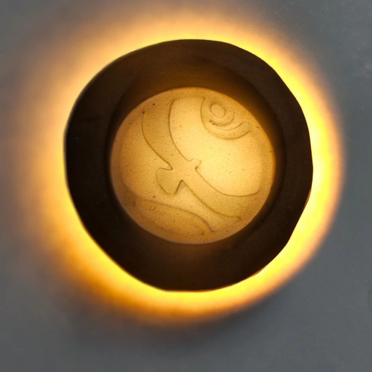
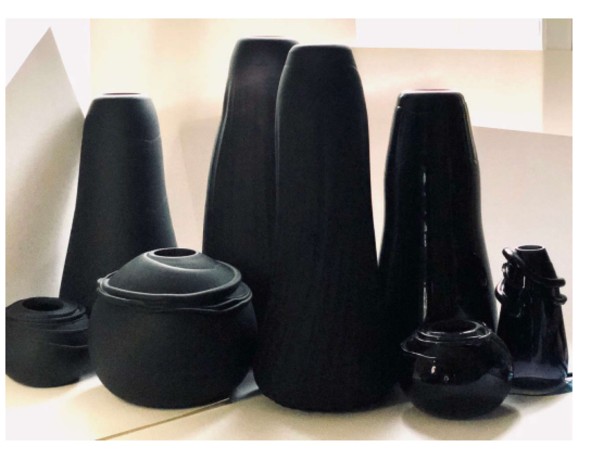
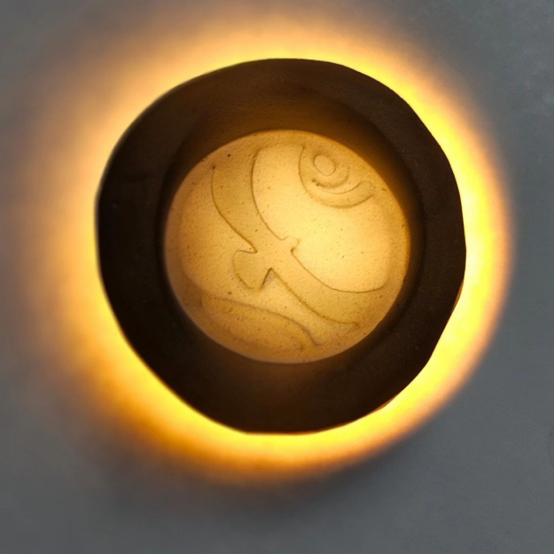
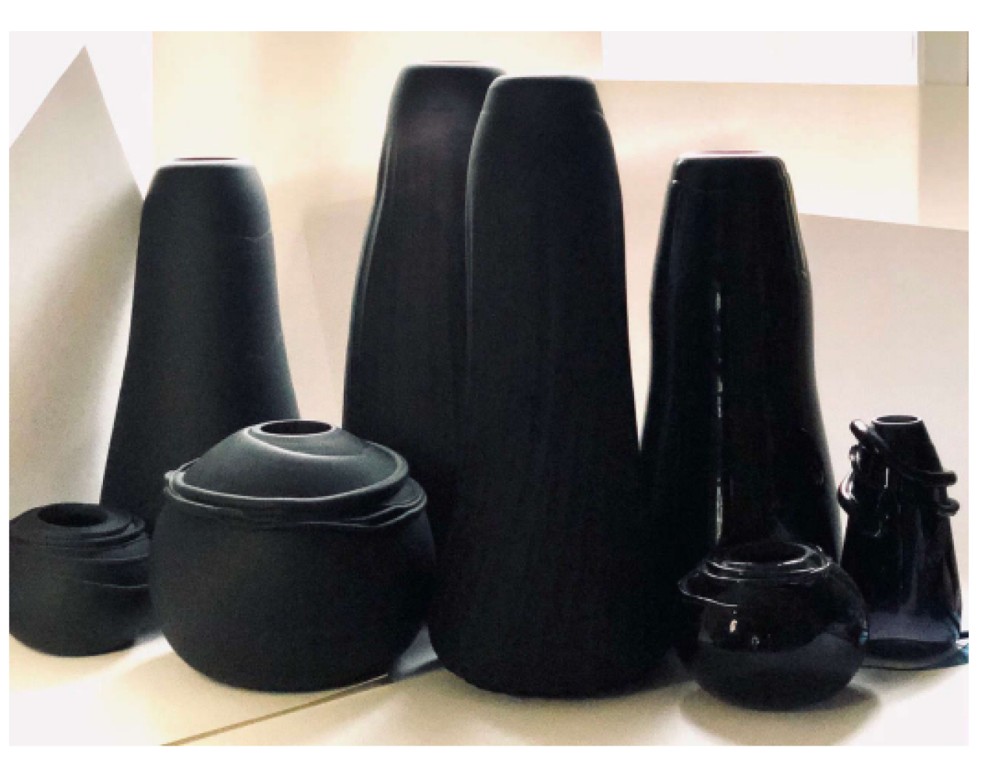

STUDIO

 



Коллекция авторского стекла GLASS NOIR
Крупные, до 60см высотой, вазы из черного матового стекла. Большой размер, скульптурная форма и текстура черного матового стекла делает их не только декоративными предметами, но и самодостаточными
арт-объектами.
Крупные, до 60см высотой, вазы из черного матового стекла. Большой размер, скульптурная форма и текстура черного матового стекла делает их не только декоративными предметами, но и самодостаточными
арт-объектами.
Для каждого проекта мы создаем уникальные индивидуальные арт объекты,
предметы декора, мебели, светильники. Это неотъемлемая часть нашего рабочего
творческого процесса. Зачастую это выходит за рамки проекта и становится
самостоятельным явлением.
РЕСТОРАНЫ РЕЗИДЕНЦИИ ОФИСЫ СПА ДРУГОЕ
АРТ
О НАС
sokolart-studio@yandex.ru
t.me/Mariia_V_Sokolova